진단 점수 구조
사용자 입력, 사업계획서 텍스트, 고객검증 신호, 자금 상태, 기관 연결 조건을 분석해 보완 우선순위를 제안합니다.
발표에서 다 보여드리지 못한 MVP 화면, 진단 흐름, 데이터 기준, 검증 결과를 QR로 확인할 수 있게 정리했습니다.
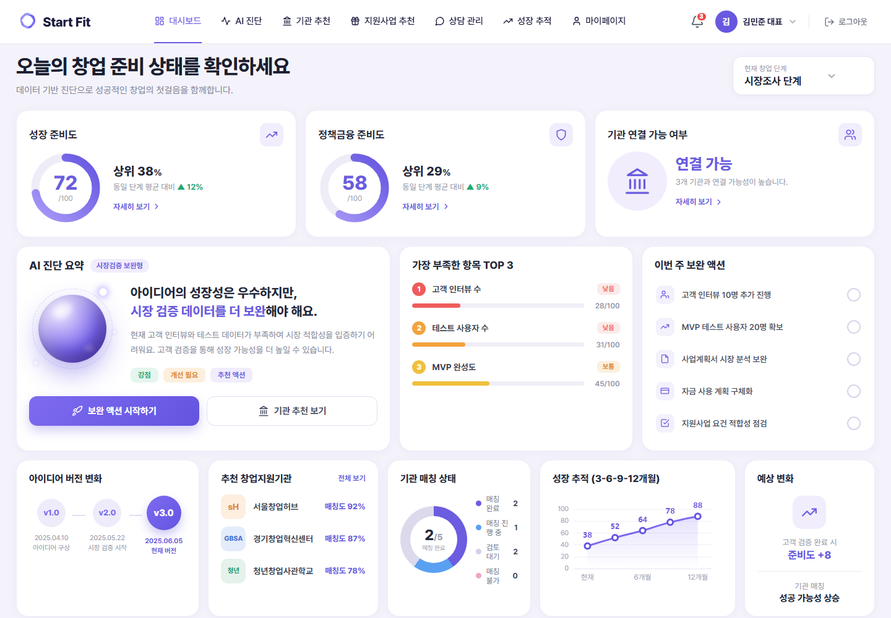
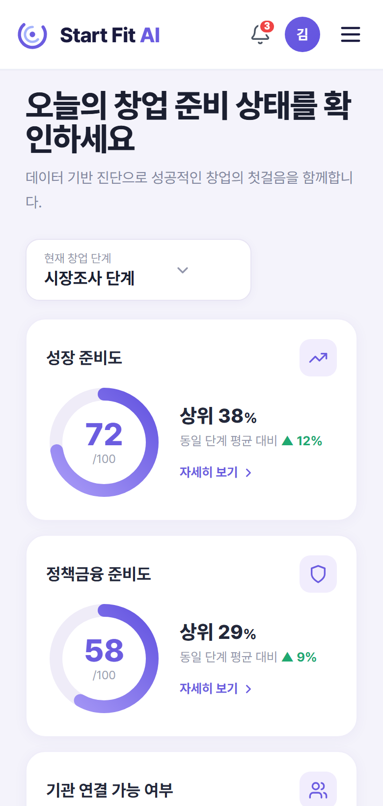
진단 점수, 5대 준비도, 진단 흐름, 신뢰 장치를 발표 보조 자료 관점에서 요약했습니다.
사용자 입력, 사업계획서 텍스트, 고객검증 신호, 자금 상태, 기관 연결 조건을 분석해 보완 우선순위를 제안합니다.
진단은 입력을 받는 데서 끝나지 않고, 기관 추천과 상담 연결까지 이어지는 구조입니다.
live StartFit 페이지에서 확인한 저장 방식, 공유 범위, 창업 정보, MVP 링크, 시장검증·자금, 사업계획서, 기관 연결 준비와 지원기관 추천 화면입니다.
같은 점수라도 부족한 근거가 다르면 먼저 보완해야 할 액션이 달라집니다. StartFit은 5대 준비도와 근거 부족 항목을 함께 보고 창업자의 현재 상태를 유형으로 번역합니다.
live 대시보드에서 확인한 탭 구조와 각 탭의 역할을 정리했습니다.
현재 창업 단계, 준비도 요약, 보완 액션, 기관 추천 가능성을 한 화면에서 확인합니다.
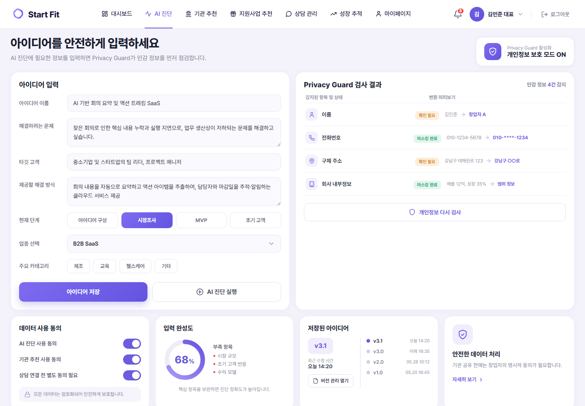
아이디어 입력부터 Multi-Agent 결과, PMF 검증, 리스크 히트맵까지 창업 아이디어를 보완하고 검증합니다.
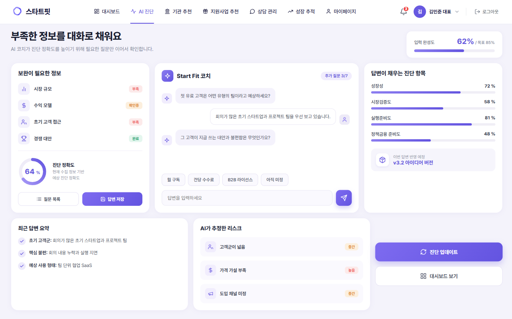
진단에 부족한 정보를 AI 코치와의 대화로 채우고, 답변이 실시간으로 진단 항목과 정확도를 끌어올립니다.
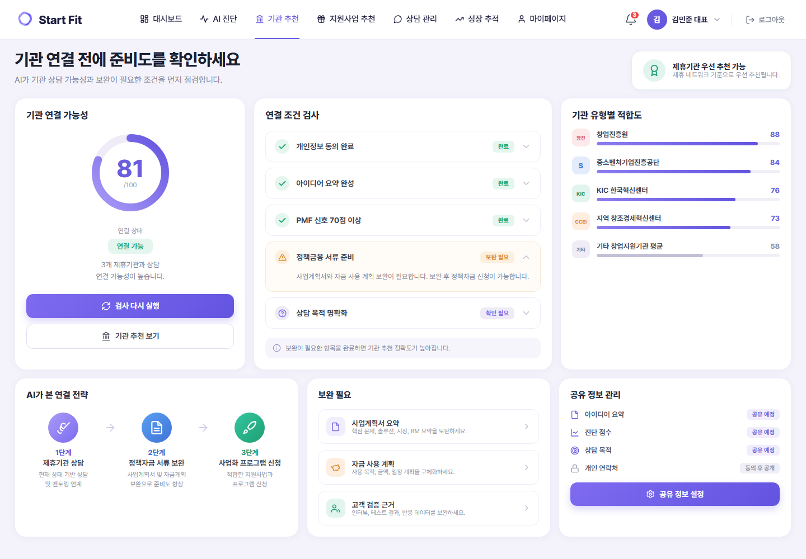
기관 연결 가능성을 먼저 검사하고, 위치·적합도·공유 정보 기준으로 추천기관을 탐색합니다.
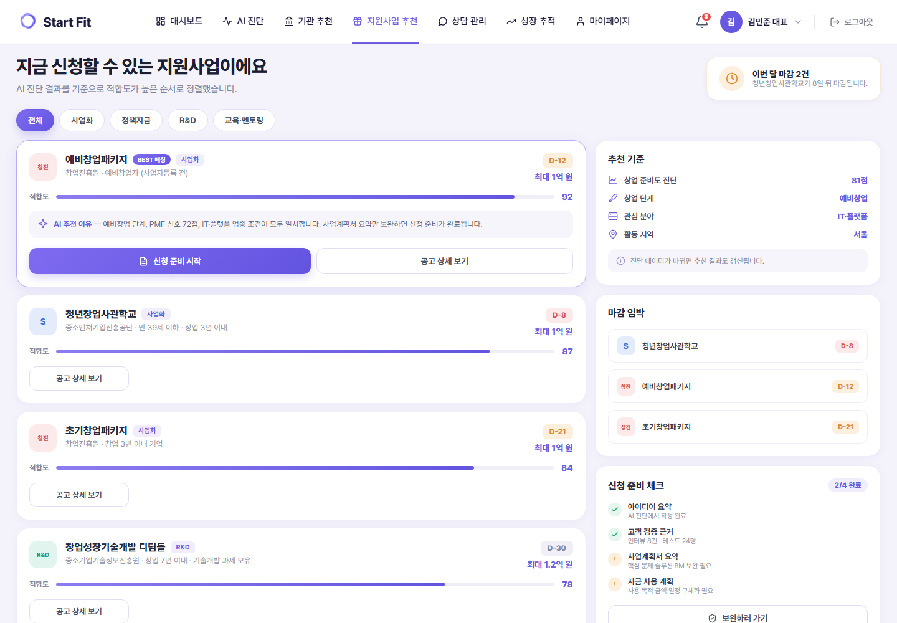
AI 진단 결과를 기준으로 신청 가능한 지원사업을 적합도와 마감 우선순위로 정렬합니다.
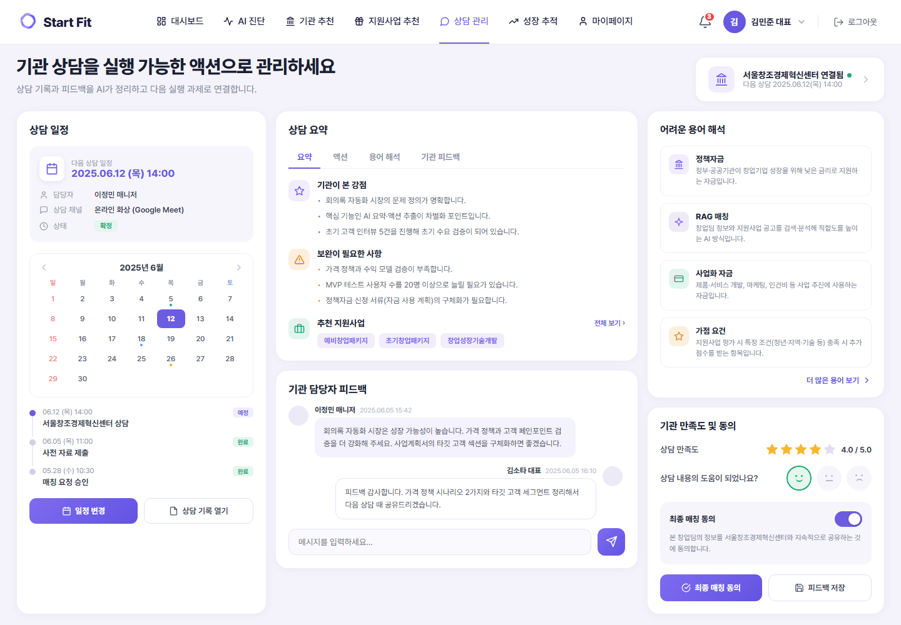
기관 상담 이후 기록, 액션, 용어 해석, 기관 피드백을 관리합니다.
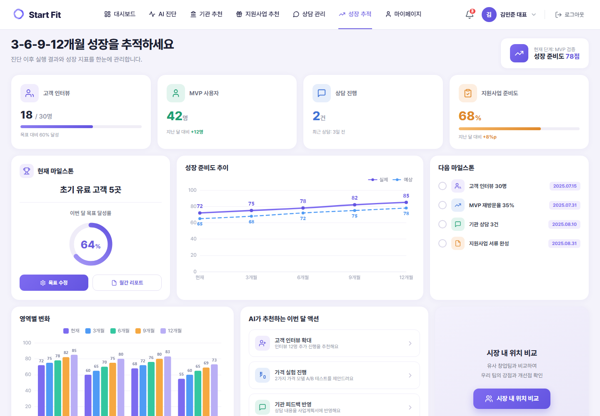
3·6·9·12개월 단위로 점수와 지표 변화를 추적하고 유사 창업팀과 비교합니다.
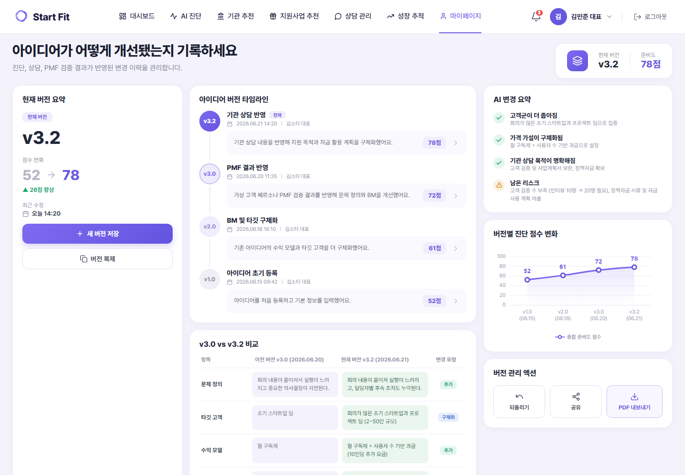
아이디어 버전, 진단 점수 변화, 공유 설정, PDF 내보내기를 관리합니다.
StartFit의 AI는 단순 생성형 답변이 아니라, 입력 데이터 구조화, 조건 필터링, 검색, 재정렬, 근거 기반 설명 생성을 단계적으로 수행합니다.
아이디어 입력, 추가 질문, Multi-Agent 평가, PMF 검증, 리스크 분석으로 창업 아이템의 보완 지점을 구조화합니다.
하드 조건 필터링, 하이브리드 검색, Cross-Encoder 재정렬로 지원 불가 공고와 Hallucination 가능성을 줄입니다.
위치, 행정 규정, 기술 정합성, 창업 단계, 공간 수요를 반영해 실제 연결 가능성이 높은 기관을 우선 추천합니다.
심사위원에게는 신뢰 구조를 공개하되, 세부 랭킹 보정과 내부 프롬프트는 서비스 핵심 자산으로 보호합니다.
사용자의 창업 아이디어를 한 번 평가하고 끝내지 않고, 부족한 정보를 추가 질문으로 보완한 뒤 여러 관점의 AI Agent가 평가합니다.
고객 문제가 충분히 큰지, 타깃 고객과 실제 수요가 명확한지 평가합니다.
MVP 구현 가능성, AI 적용 현실성, 데이터 확보 가능성을 점검합니다.
B2B/B2C 적합성, 가격 정책, 지속 가능한 수익구조를 분석합니다.
발표에서 받을 가능성이 높은 질문과 사업계획서의 약점을 도출합니다.
공고문을 LLM에 그대로 넣는 방식이 아니라, 지원 가능 조건을 먼저 차단하고 검색과 재정렬을 거쳐 가장 Fit한 공고만 설명 생성에 사용합니다.
나이, 지역, 기창업 여부와 공고문의 하드 조건을 SQL 쿼리단에서 대조해 원천적으로 지원 불가한 공고를 차단합니다.
Dense 검색으로 사업계획서 문맥과 맞는 공고를 찾고, BM25 기반 Sparse 검색으로 핵심 키워드 포함 여부를 교차 확인합니다.
상위 20개 공고를 창업팀 정보와 공고 전문의 1:1 비교로 재평가해 실제 신청 가능성과 합격 가능성이 높은 Top 3를 정렬합니다.
최종 후보 공고 데이터만 LLM에 주입해 적합도 점수, 추천 사유, 필요 서류, 이번 주 액션플랜을 생성합니다.
LLM이 모르는 공고를 상상해서 추천하지 않도록, 추천 대상은 필터링과 검색을 통과한 실제 공고 데이터로 제한하고 출처 확인이 가능하게 설계합니다.
실제 연결이 어려운 기관은 먼저 제외하고, 남은 기관을 기술·단계·공간 정합성 기준으로 점수화합니다.
주소지 기반 관할 지자체, 접근 반경, 기관별 행정 규정, 공간 지원 KPI를 먼저 대조해 부적격 매칭을 차단합니다.
대학·공공기관의 공간 지원에서 “3개월 이내 사업자등록 필수”와 같은 성과 지표가 존재함을 확인하고 조건 필터에 반영합니다.
센터별 특화 분야와 창업팀 사업 요약본의 코사인 유사도
기관 보육 타깃과 창업팀 단계의 매트릭스 매핑 점수
입주 공간, 실물 인프라, 공실 여부와 팀 수요의 매칭 점수
심사위원 설득에 필요한 수준의 구조는 보여주되, 추천 품질을 좌우하는 세부 구현은 서비스 자산으로 남깁니다.
StartFit은 AI가 추천을 “생성”하는 서비스가 아니라, 사용자의 창업 데이터와 실제 공고·기관 데이터를 검증 가능한 절차로 매칭해 실행 가능한 다음 액션으로 바꾸는 서비스입니다.
핀넥트: 스타트링크 팀 데이터 예시본과 실제 우리팀 팀장의 A창업 입주기관 서류탈락 사례, B창업 입주기관 서류합격 사례를 함께 배치해 AI 진단이 정상 작동하는지 확인할 수 있게 정리했습니다.
팀장이 실제로 입주기관 서류에서 탈락한 뒤, 진단 결과를 바탕으로 자료를 보완하고 컨설팅을 거쳐 다른 입주센터 지원에서 합격한 흐름을 사례로 제시합니다.
우리 서비스가 팀 데이터를 5대 준비도, 최종 유형, 보완 액션으로 구조화하는 기본 예시입니다.
입주기관 심사에서 탈락했던 자료를 기준으로 AI가 부족한 근거와 우선 보완 항목을 잡아낸 사례입니다.
컨설팅과 서류 보완 이후 다른 입주센터 지원에서 합격한 자료를 기준으로 개선 흐름을 보여주는 사례입니다.
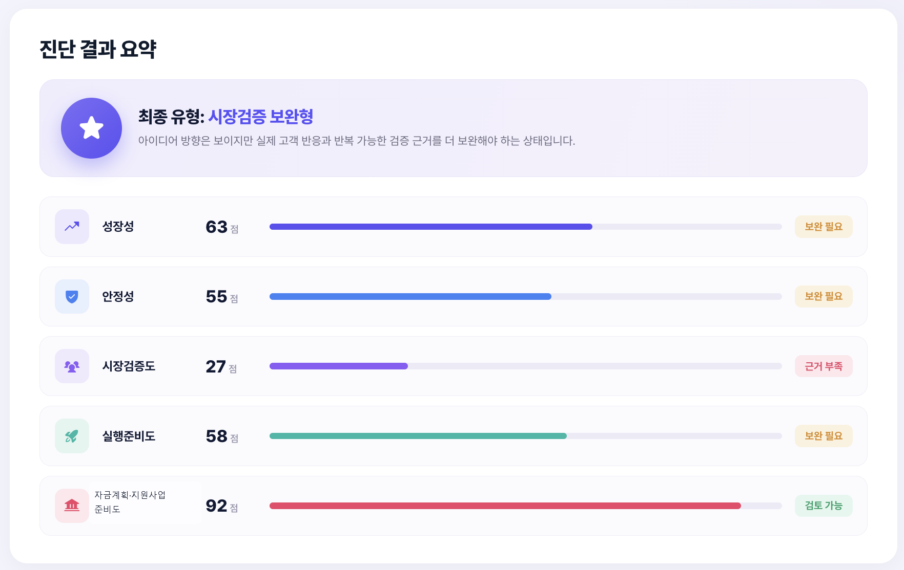
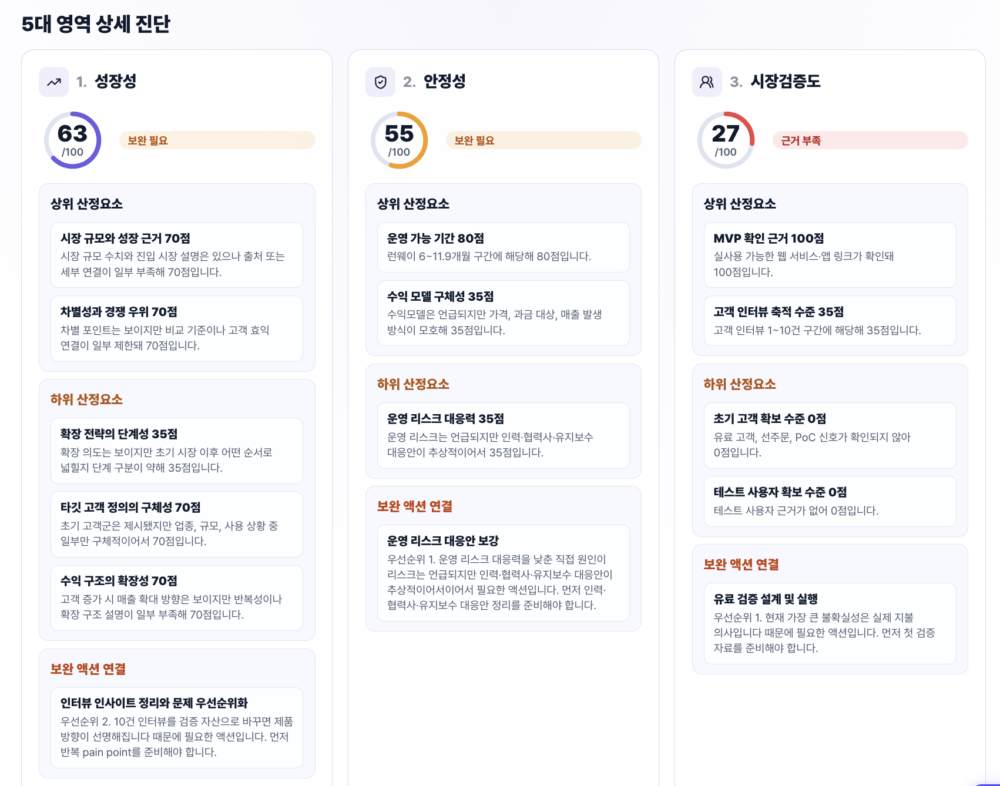
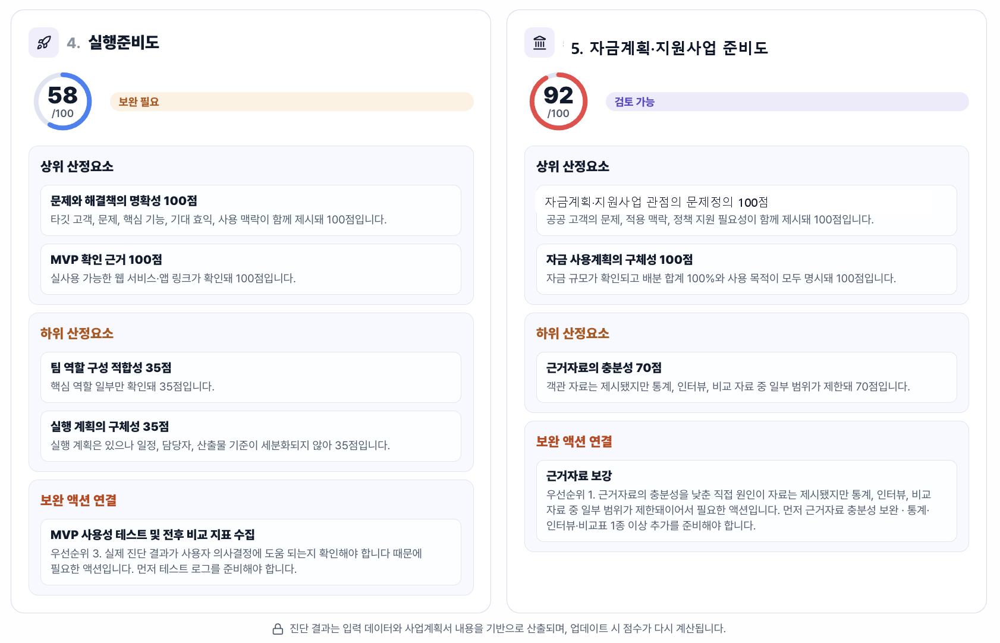
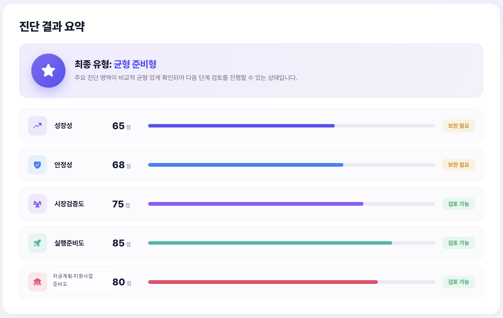
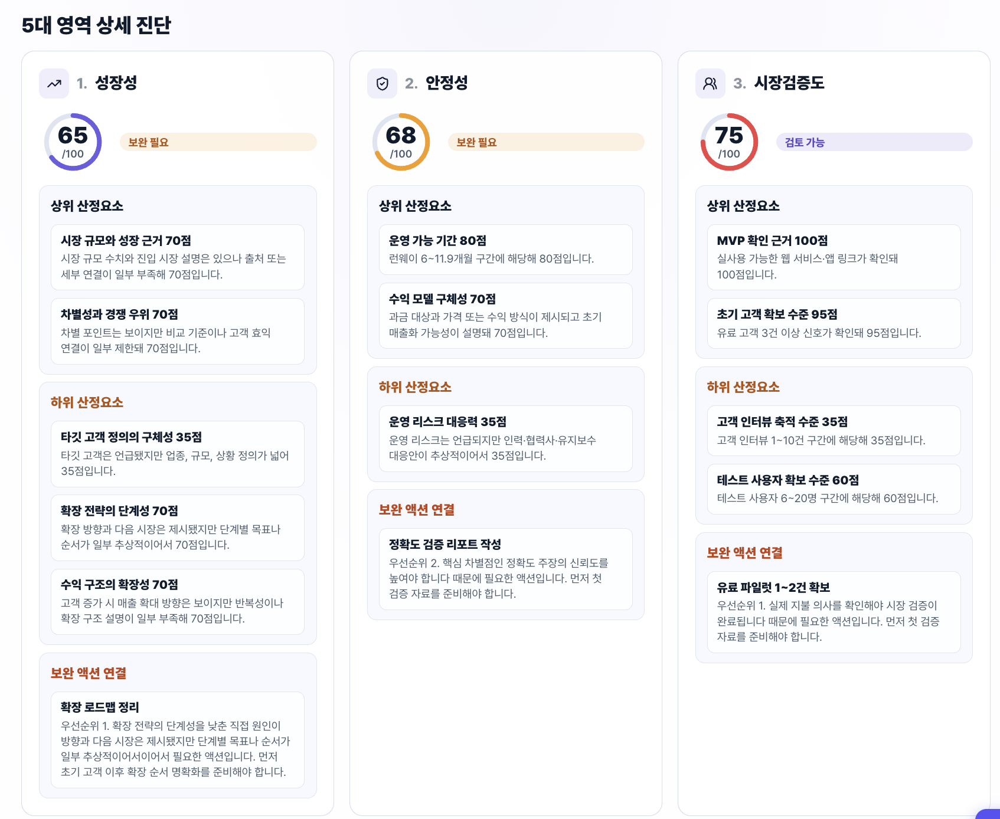
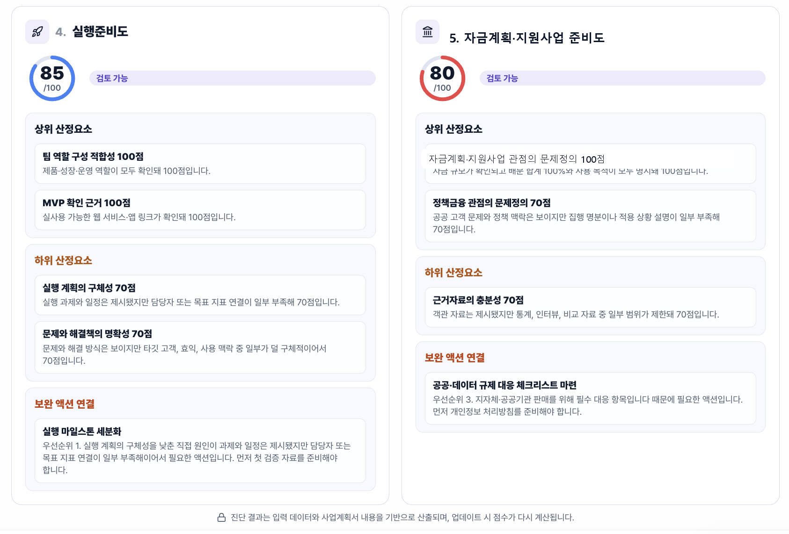
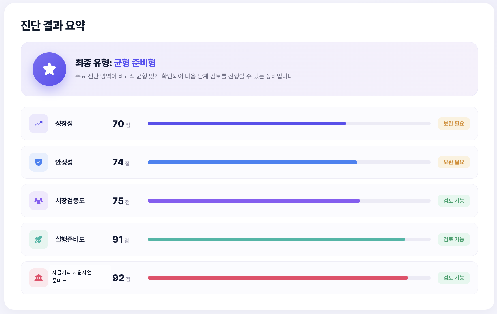
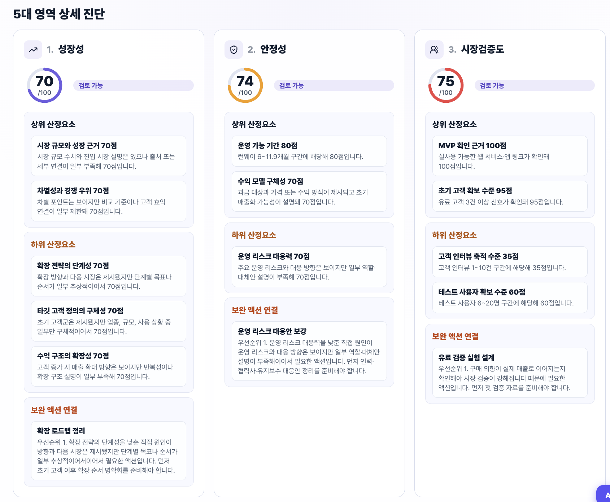
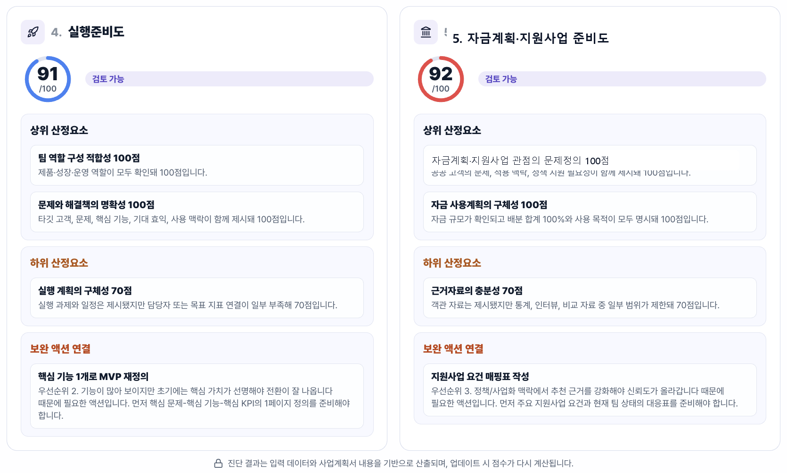
심사위원이 판단할 수 있는 구조는 공개하고, 서비스의 세부 평가 로직은 보호합니다.
PSST 평가체계, NSF I-Corps의 고객발견, EIC Accelerator의 시장성·팀 역량·실행계획 기준을 참고했습니다. 초기 창업에서는 고객수요 실증과 실행 가능성이 중요하다고 보고 시장검증도와 실행 준비도에 가장 높은 비중을 두었습니다.
창업 단계, 고객 수, MVP, 자금 상태를 같은 기준으로 정리합니다.
문제정의, 시장 근거, BM, 실행계획을 PSST 흐름으로 추출합니다.
정량 입력과 LLM 근거 평가를 5대 준비도로 나눕니다.
가중치를 적용해 최종 창업 준비도 지수로 합산합니다.
점수를 창업 유형과 우선 보완 액션으로 바꿉니다.
창업 단계, 업종·지역, 팀 구성, 고객 반응, MVP 증빙, 보유자금, 월 고정비, 예상 매출을 입력받습니다.
활용: 시장검증도·실행 준비도·안정성 계산문제정의, 타깃 고객, 시장 근거, 차별성, BM, 자금 사용계획, 실행 로드맵을 LLM으로 구조화합니다.
활용: PSST 흐름과 보완 항목 도출K-Startup, 기업마당, KOSIS 창업기업동향, 기업생멸·생존율 데이터를 활용합니다.
활용: 지원사업 후보, 필요서류, 마감 리스크 안내고려대 크림슨창업지원단 인터뷰에서 본격 창업 단계에는 5대 진단 영역이 실무적으로 작동한다는 피드백을 받았습니다.
극초기 동아리 단계는 단계별 가중치 조정 필요문제인식, 실현가능성, 성장전략, 팀 구성을 5대 준비도에 매핑했습니다.
미감지 0점, 언급 수준 35점, 일부 근거 70점, 수치·증빙·실행계획이 충분하면 100점으로 봅니다.
보유자금과 월 고정비로 생존 가능 기간을 계산해 안정성 판단에 활용합니다.
데이터 출처, 5대 지표, 최종 공식, 대표 점수화 예시, 기관 인터뷰 검증 결과를 공개합니다.
전체 프롬프트, 세부 임계값, 보정 규칙, 추천 알고리즘, 기관 매칭 가중치는 공개하지 않습니다.
FIN:NECT StartFit 발표에서 QR로 열어볼 수 있는 보조 자료 허브입니다. 발표를 대체하지 않고, 최신 MVP 화면과 근거를 추가 확인하는 용도입니다.
데이터 저장 방식과 기관 공유 범위부터 창업 단계, MVP 링크, 시장검증·자금, 사업계획서, 기관 연결 조건 검사, 기관 지도 추천, 매칭 요청까지 포함합니다.
아이디어 입력, 추가 질문, Multi-Agent 진단, PMF 검증, 리스크 히트맵으로 나뉩니다. 각 탭은 입력 보완, 종합 분석, 고객 검증, 위험 대응을 맡습니다.
PSST 흐름과 국내외 창업지원 평가체계를 참고해 안정성 20%, 성장성 20%, 시장검증도 25%, 정책금융 준비도 10%, 실행 준비도 25%로 산정합니다. 시장검증과 실행 준비도는 초기 창업 성과에 직접 연결된다고 보아 가장 높은 비중을 둡니다.
Privacy Guard로 민감정보를 먼저 감지하고, 기관 공유 전에는 공유 범위와 개인 연락처 공개 여부를 별도로 확인합니다.
진단 입력부터 결과 대시보드까지 직접 확인할 수 있습니다.